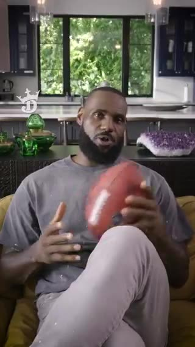

The cycle · visit → ads → return
Loading the record…
Day 1The visit
Yahoo Fantasy: Football & more
app visit · Day 1, 7:11 PM · start of the window
Day 1Ad 1 of 5 · +3h 55m
DraftKings SportsbookX · PromotedDraftKings Sportsbook @DKSportsbook — Happy NBA Opening Day! Ready for a BIG game-changer? #KingOfTheCourt.

Day 1Ad 2 of 5 · +3h 56m
DraftKings SportsbookX · PromotedDraftKings Sportsbook @DKSportsbook — Happy NBA Opening Day! Ready for a BIG game-changer? #KingOfTheCourt.
Day 1Ad 3 of 5 · +3h 56m
WOW VegasX · PromotedWOW Vegas @wowvegascom — Win with Paris & enjoy 900 slots at the all new WOW Vegas casino! Join Now
Day 2Ad 4 of 5 · +16h 31m
DraftKings SportsbookX · PromotedDraftKings Sportsbook @DKSportsbook — Happy NBA Opening Day! Ready for a BIG game-changer? #KingOfTheCourt.
Day 2Ad 5 of 5 · +16h 32m
DraftKings SportsbookX · PromotedDraftKings Sportsbook @DKSportsbook — Happy NBA Opening Day! Ready for a BIG game-changer? #KingOfTheCourt.
Day 3The return · +44h 11m
Yahoo Fantasy: Football & more
Opened again · app visit · Day 3, 3:22 PM
More cycles from the same data
Nine loops passed the display rule. Pick one.
DraftKings, in the aggregate
No DraftKings-anchored loop met the display rule, so DraftKings appears as aggregates only.
Methods & limits: the cycle
The burden · who sees it all
A few feeds carry almost all of it
Who is in the heaviest 10%?
Exposure is observed delivery — not attention, clicks, or harm. Concentration describes where ads landed, not why.
Methods & limits: the burden
Ad Spend · MediaRadar / Vivvix · paper + live
Gambling ad spend, 2014 → today
Current spend by advertiser — live
The paper (Study 1) · state level
Loading…
What predicts help-seeking?
Mixed models on 1,640 state-quarters with demographic controls (final paper, revision 3 outputs). Model 4: each +$100k of quarterly state ad spend predicts +1.23 help-seeking index points; legal status adds nothing detectable. Model 5 (AR1): the spend association itself grows over time. Observational — not causal identification.
State explorer — spend now (MediaRadar, monthly 2024–2026)
State explorer — the paper window (quarterly)
Methods & limits: Study 1
Quarterly state gambling advertising outlays across paid media (Vivvix 360, 2014–2023) linked to Google Trends indices summed over 116 problem-gambling help-seeking queries (e.g. “gambling addiction hotline”, “how to stop gambling”). Trends values are indexed 0–100 within capture windows; the paper's Trends Sum is reproduced as archived. Legalization dates mark first legal online sports betting. One extra quarter in the archived file (2024-Q1) is outside the paper window and excluded here.
Google Trends — live · pulled — via the official API
The paper's help-seeking searches, right now
The same 116 problem-gambling help-seeking queries from Study 1, pulled fresh from Google's official Trends API and anchor-normalized so they sum like the paper's index. A live continuation of the Study 1 lane — a different, rescaled window, never merged with the 2014–2023 series.
Help-seeking heatmap — state by state, 2004 → today
Problem-seeking
| Most-searched help-seeking terms (live window) | Anchored index, total |
|---|